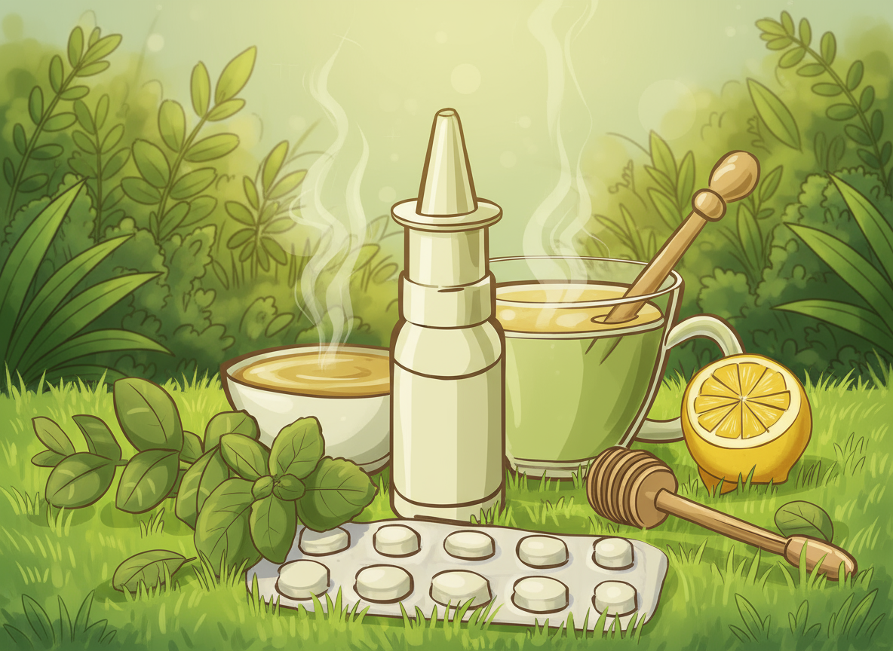
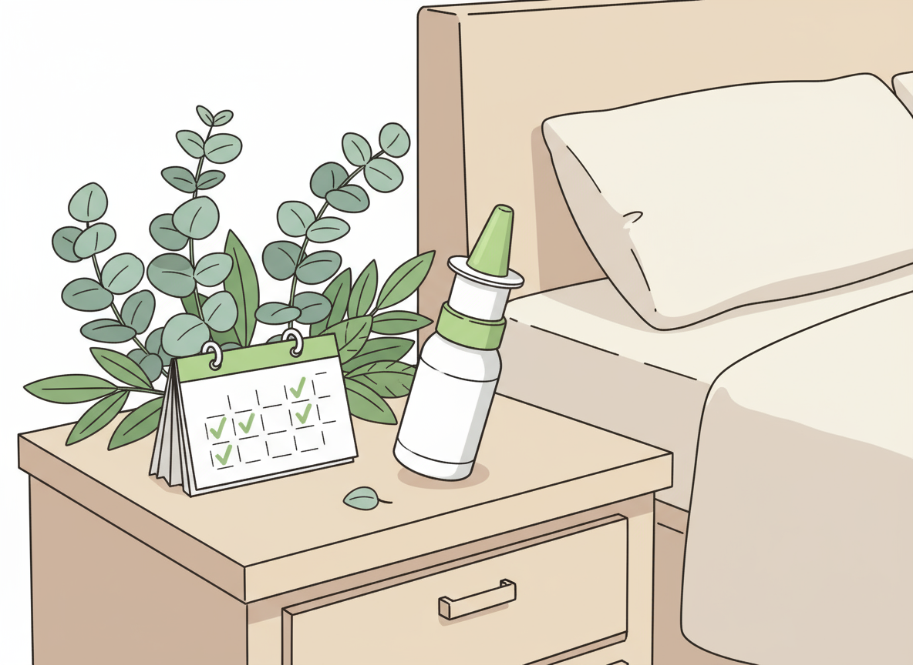
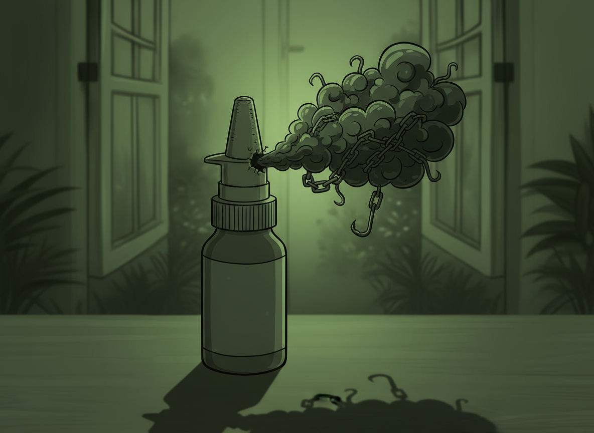

Naturlig Lindring af Stoppet Næse
Skånsomme metoder, der giver friere luftveje uden afhængighed eller kunstige produkter
Skånsomme metoder, der giver friere luftveje uden afhængighed eller kunstige produkter

"Mange oplever tilstoppet næse i hverdagen, især i perioder med forkølelse...
Varme dampindåndinger kan hjælpe med at løsne slim og åbne luftvejene, især hvis du er forkølet. Du kan enten bruge en skål med varmt vand eller tage et langt varmt bad. Samtidig er saltvandsopløsninger – enten som næsespray eller næseskylning en sikker og effektiv måde at fugte slimhinderne og reducere irritation. Kombinationen af varme og saltvand kan give hurtig og naturlig lindring.
Urteteer som ingefær, kamille eller pebermynte kan virke let slimløsnende og give en behagelig varme indefra. En tur i den friske luft kan også gøre en stor forskel, da kølig luft midlertidigt kan mindske hævelse i næseslimhinderne. Derudover kan simple rutiner som at drikke rigeligt vand, hæve hovedet under søvn eller holde hjemmets luftfugtighed stabil hjælpe med at holde næsen mere åben i hverdagen.
"At stoppe med næsespray kan være svært, men med en struktureret nedtrapningsplan...
En af de mest effektive måder at trappe ud på er kun at bruge næsespray i det ene næsebor ad gangen. Det andet næsebor får dermed ro til at hele, mens du stadig kan få luft gennem det behandlede næsebor. Efter et par dage skifter du side. Denne metode gør processen mere overkommelig og reducerer ubehaget.
Hvis du normalt bruger næsespray flere gange om dagen, kan du begynde med at øge tidsrummet mellem hver dosis. Først med en time eller to – senere mere. Selvom det kan føles svært i starten, vil kroppen gradvist vænne sig til det mindre forbrug, og trangen vil ofte falde af sig selv.
"Mange oplever, at næsespray hurtigt lindrer en tilstoppet næse...
For mange begynder det helt uskyldigt. En forkølelse, en tilstoppet næse og et hurtigt besøg på apoteket efter næsespray, der kan give fri luft. De første dage føles sprayen som en befrielse. Pludselig kan man trække vejret igen og sove om natten. Men for flere end man tror, bliver den midlertidige hjælp langsomt til en vane – og i værste fald en afhængighed. Når næsespray bruges i mere end 7-10 dage i træk, vænner slimhinderne sig til den kunstige lindring. Sprayens virkning får blodkarrene i næsen til at trække sig sammen, men når effekten aftager, udvider karrene sig igen – ofte endnu mere end før. Resultatet er en næse, der føles permanent stoppet, medmindre man bruger sprayen igen. Det bliver en ond cirkel, hvor kroppen kræver det, som egentlig skulle hjælpe den. Afhængigheden kan vise sig i form af konstant tilstoppet næse, irritation, tørhed eller endda svækket lugtesans. Nogle beskriver det som at være “fanget i sprayens kæder” præcis som billedet symboliserer: en midlertidig lettelse, der langsomt bliver et fængsel.
Det kan føles svært at stoppe, men heldigvis er der veje ud af afhængigheden. Den mest skånsomme metode er en gradvis nedtrapning, hvor man enten reducerer antallet af gange man bruger sprayen om dagen, eller nøjes med at spraye i det ene næsebor ad gangen. Efter få uger begynder næsens slimhinder at finde tilbage til deres naturlige balance. Der findes også saltvandssprays, næseskyl og fugtgivende produkter, der kan hjælpe næsen på en naturlig måde uden risiko for afhængighed. I sværere tilfælde kan lægen vejlede i en mere struktureret udtrapning, eventuelt kombineret med kortvarig brug af mild steroidnæsespray. Det vigtigste er at bryde cirklen og at huske, at næsespray ikke skal være en fast del af hverdagen. At trække vejret frit skal være naturligt, ikke noget man skal kæmpe for.